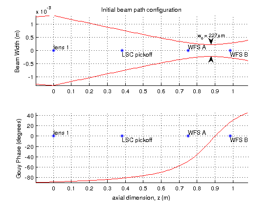
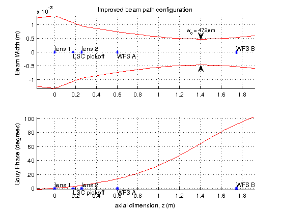

Custom cost function example script
This example shows how to use a custom cost function with the chooseComponents function. In this case, we would like to design a gouy phase telescope where the beam size is not too small, but we maintain good Gouy phase separation between our wavefront sensors (WFS). The file gouyCost.m takes a beamPath object as an argument, and calculates a cost which includes a penalty both for small beams, and for bad Gouy phase separation.
Contents
Define constants
cm = 0.01; um = 1e-6; in = 0.0254; diameter = 0.5;
Initial Beam Path
construct the current beam path object
isct6 = beamPath; isct6.seedq = beamq(0.0225 + 0.1519i); isct6.seedz = 0.9; % populate components currently on table zWFSA = 75*cm; zWFSB = 98.5*cm; isct6.addComponent(component(eye(2),zWFSA,'WFS A')); isct6.addComponent(component(eye(2),zWFSB,'WFS B')); isct6.addComponent(component.lens(0.687,0,'lens 1')); isct6.addComponent(component.flatMirror(15*in,'LSC pickoff')); figure(842) isct6.plotSummary() title('Initial beam path configuration')
Beam path optimization
start new layout, make some initial changes by hand
newisct6 = isct6.branchPath(-1*in); newisct6.moveComponent('LSC pickoff',-8*in); newisct6.moveComponent('WFS A',11.7*in+12*in,'absolute'); newisct6.addComponent(component.lens(-.229,11.7*in,'lens 2')); % a list of possible focal lengths for the new lens lens2list = component.lens([-.3436 -1.1456 -.2291 Inf]);
Run the optimization algorithm with custom cost function defined in gouyCost.m.
tic sol = newisct6.chooseComponents(... 'lens 2',lens2list,[-3*in 5*in],... % allow lens2 to be changed for other lenses in the list, and move -3 to +5 inches 'WFS B',[],[-17*in 30*in],... % allow WFS2 to move -17 to +30 inches '-r',... % make the movement ranges relative to current component locations '-v',... % print out information while searching '-c',@gouyCost); % use a custom cost function to minimize, defined in gouyCost.m toc
Searching through 4 combinations. current cost: 1.0496. best so far: 1.0496. 3 more to try. current cost: 0.4738. best so far: 0.4738. 2 more to try. current cost: 1.1076. best so far: 0.4738. 1 more to try. current cost: 0.91087. best so far: 0.4738. 0 more to try. Elapsed time is 24.552151 seconds.
The improved beam path
the optimal solution is the first element of the returned array
bestisct6 = sol(1); figure(423) bestisct6.plotSummary(); title('Improved beam path configuration') % print the components to the console bestisct6.components % print out some parameters of the new beam path zWFSA = bestisct6.component('WFS A').z; zWFSB = bestisct6.component('WFS B').z; qWFSA = bestisct6.qPropagate(zWFSA); qWFSB = bestisct6.qPropagate(zWFSB); disp(['WFS separation: ' num2str(bestisct6.gouySeparation('WFS A','WFS B')) ' deg']) disp(['Diameter on WFSA: ' num2str(qWFSA.beamWidth/(um*diameter)) ' um']) disp(['Diameter on WFSB: ' num2str(qWFSB.beamWidth/(um*diameter)) ' um'])
ans =
label z (m) type parameters
----- ----- ---- ----------
lens 1 0 lens focalLength: 0.6870
LSC pickoff 0.1778 flat mirror none:
lens 2 0.2611 lens focalLength: -1.145
WFS A 0.6020 other none:
WFS B 1.7470 other none:
WFS separation: 78.1144 deg
Diameter on WFSA: 1491.4907 um
Diameter on WFSB: 1062.8121 um
